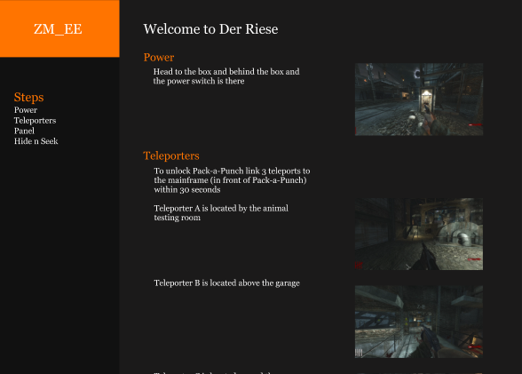

Call of Duty: Zombies easter egg website guide
ZM_EE is a text-based guide for Call of Duty: Zombies players to view before, during, and after they play zombies so these players can complete the main quest and learn about the zombies story line as they go through.
I am currenly focusing on all of Treyarch's main title games from Call of Duty: World at War to Call of Duty: Black Ops 6, playing through each map that contains a main quest to take screenshots to accompany the text-based guide to make it easier to players to find objects within their game.
This whole project is still a work in progress and I'll be sure to release a full functioning prototype of ZM_EE soon.